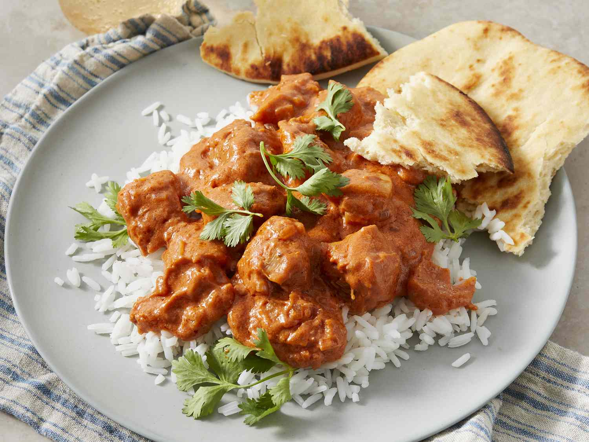

Home
Chicken Makhani (Indian Butter Chicken)

Chicken Makhani, or Indian Butter Chicken, is a rich and creamy dish made with tender chicken simmered in a spiced tomato and butter-based sauce. It’s known for its smooth texture and bold flavors.
Often served with naan or basmati rice, this dish balances warmth from garam masala, ginger, and chili with the richness of butter and cream. Variations may include cashew paste or yogurt for added depth.
Ingredients
- 2 tablespoons peanut oil, divided
- ¼ cup water
- 1 tablespoon cornstarch
- ¼ teaspoon cayenne pepper, or to taste
- 1 pound boneless, skinless chicken thighs, cut into bite-size pieces
- 1 pinch salt and ground black pepper to taste
- ¼ cup plain yogurt
- 1 cup half-and-half
- 1 cup tomato puree
- 1 bay leaf
- 1 teaspoon ground cumin
- 1 teaspoon chili powder
- 2 teaspoons garam masala, divided
- 2 teaspoons lemon juice
- 1 tablespoon ginger garlic paste
- 2 tablespoons butter
- ¼ white onion, chopped
- 1 shallot, finely chopped
Steps
- Heat 1 tablespoon oil in a large saucepan over medium-high heat. Sauté shallot and onion until soft and translucent, about 5 minutes.
- Stir in butter, ginger-garlic paste, lemon juice, 1 teaspoon garam masala, chili powder, cumin, and bay leaf. Cook and stir for 1 minute. Add tomato sauce, and cook for 2 minutes, continuing to frequently stir.
- Stir in half-and-half and yogurt. Reduce heat to low, and simmer for 10 minutes, frequently stirring. Season with salt and pepper. Remove from heat and set aside.
- Heat remaining 1 tablespoon oil in a large heavy skillet over medium heat. Cook chicken until lightly browned, about 10 minutes.
- Reduce heat, and season with remaining 1 teaspoon garam masala and cayenne. Stir in a few spoonfuls of sauce, and simmer until liquid has reduced, and chicken is no longer pink. Add cooked chicken into sauce and stir together.
- Dissolve cornstarch into water, then mix into the sauce. Cook for 5 to 10 minutes, or until thickened.
- Serve over rice with naan.